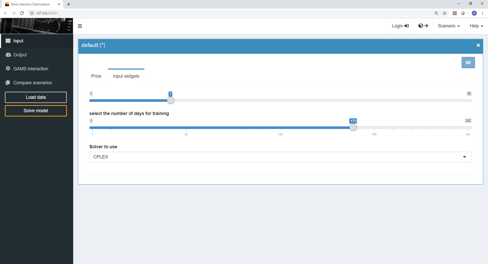
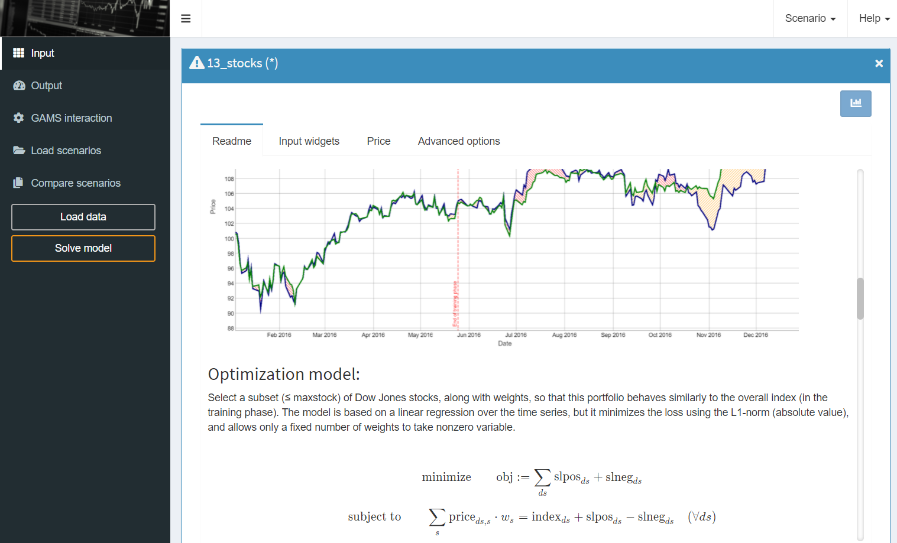
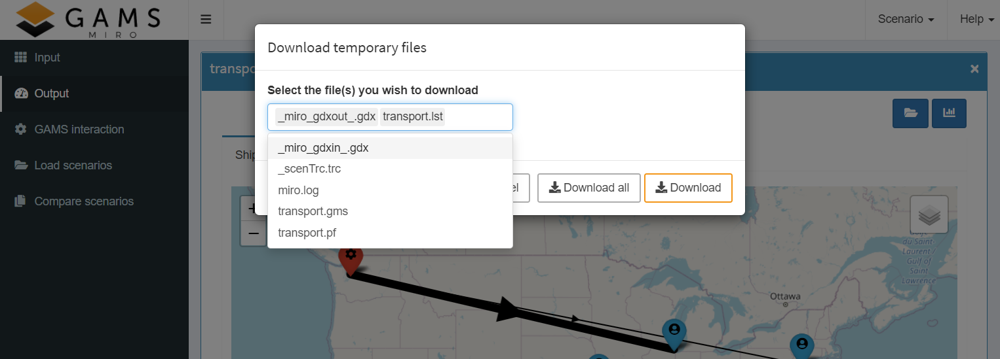
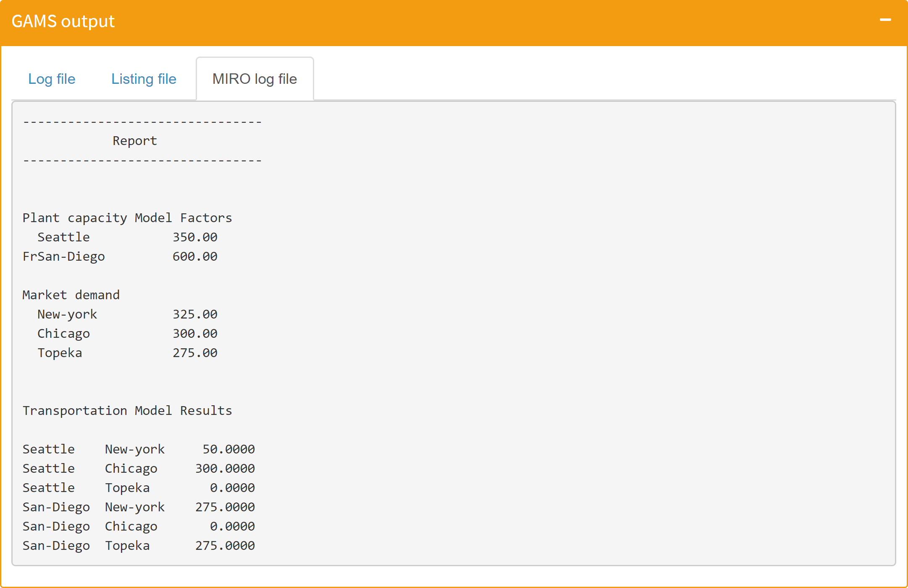

In addition to the color mode, various color themes can be selected. This setting is done for all apps in the global MIRO settings.
General Settings
Introduction
Here you can customize the general behavior and appearance of MIRO. Changes made in this category are automatically saved.
User Interface
Title
This option allows you to customize the title of the application that is displayed in the browser window. If a $title has been defined in the GAMS model, this is used by default.

Logo
Upload a custom logo (png/jpg file) for your MIRO app, which is displayed in the upper left corner. Best ratio: 4,6:1.
Color Mode
Allows you to choose between MIRO light and dark mode as well as the dynamic adaptation of the theme based on the user's system settings.
Default light mode:
Default dark mode:

Tip:
Custom CSS
Allows you to include a custom CSS file in your MIRO app. The file must be named custom.css and located in the static_<modelname> directory.
Readme File
You have the possibility to integrate a README file into the MIRO application. Its content is displayed in the input section in the first tab and is therefore the first thing the user sees after starting the application. This tab can be used by the developer to introduce and explain the MIRO application or the underlying GAMS model before the user starts working with it.

Usage:
The readme file must be a
Markdown
or HTML document which is located in the model
directory. The README option must be activated in the
Configuration Mode. Three options are available:
-
README tab title (mandatory)
With this option you can customize the title of the README tab in the input section. Default: README -
README file name (mandatory)
With this option you specify the name of the readme file that you want to display (minimum 4 characters). -
Enable mathematical typesetting?
(optional)
In case you want to use mathematical notation in your README file, activate this checkbox. You can use inline math by wrapping your equations between $ signs. To render the equation centered on its own line, use two dollar signs: $$.Example:
A list of all TeX functions supported by MIRO can be found here. To write a literal dollar sign, you must escape it with a backslash: \$.
This integral $\def\f#1{f(#1)} \f{x} = \int_{-\infty}^\infty\hat \f\xi\,e^{2 \pi i \xi x}\,d\xi$ is rendered inline. is rendered as: This integral $\def\f#1{f(#1)} \f{x} = \int_{-\infty}^\infty\hat \f\xi\,e^{2 \pi i \xi x}\,d\xi$ is rendered inline.
The readme file can be created or edited directly in Configuration Mode:
Note:
If you want to include images in your readme file, they must be located in the folder static_<modelname> in your model directory. In the Markdown/HTML file, the path of the images used must be prefixed with "static_<modelname>".
Generate Input Graphs Automatically
If this option is activated, a pivot table is created for each input symbol in addition to the table. If a graph is configured for a symbol explicitly, it will be used instead.
Default Output Renderer
Without further configuration, a pivot table for data visualization can be displayed automatically for each output symbol. If a graph is configured for a symbol explicitly, it will be used instead.
Scenario Data and Attachments
Default Scenario
Allows you to pre-populate tables and widgets with data when starting MIRO. If this option is set and a scenario name is specified, MIRO looks for the corresponding scenario in the database at the application startup and automatically loads all data into the interface. In case always the same input data is used as base data, the step of importing data into MIRO can be skipped with this option.
Local Data Upload
If the local data upload module is enabled, scenario data can be loaded via local files.

Attachments
Allow users to add and save file attachments to scenarios. Read more about this in the File attachments section here.
Output Attachments
Output attachments allow you to automatically attach files after a GAMS run has been successfully completed. This lets you store additional results alongside the ones displayed in the UI. In addition, MIRO gives you the option to choose what should happen when an attachment is not found after a successful GAMS run. Should the user be informed of this by an error message or should it be silently ignored. You can also choose to automatically extract the attachment to the working directory when you start another GAMS run with this scenario. This function adds a state to your scenarios. Per default, scenarios in MIRO are stateless. This means that running two consecutive GAMS runs with the same input data will result in the same output data. By adding an attachment to the scenario that GAMS is allowed to read on consecutive executions, the results may no longer be the same.
Let's have a look at a simple (toy) example:
$if exist report.put $abort "Report was found"
File report;
put report;
put "This is a report."
putclose;
When you run this GAMS model for the first time, it creates a file report.put. When running it a second time, it aborts with a compilation error: "Report was found". If you add the file report.put as an output attachment and select to extract it into the working directory whenever you run this scenario again, your scenario will carry a state. This gives you the possibility to implement processes of any complexity in your MIRO application.
Note:
When this option is activated, additional files will be saved to each solved scenario. You should make sure that the disk space used does not become excessive (e.g. by limiting the output written to the lst file).
Access Temporary Directory
This option specifies whether all temporarily created
files of the model run (like solution reports or the
lst and
log files) can be accessed by
the user. If set to true, the files can be downloaded
individually or as a ZIP archive with a click on the
 button.
button.

Excel Export: Metadata
Include a metadata sheet in the Excel file when exporting a scenario. The metatdata sheet contains information about the user name, the scenario name and the time the scenario was created.

Excel Export: Empty Sheets
This option specifies whether empty sheets should be included when exporting a scenario. Sheets can be empty e.g. when a scenario contains only input data (has not been solved).
Decimal Places
Number of decimal places used for rounding numerical values. This is a global setting and has an effect on all output tables, Big Data input tables and the table for finding and loading scenarios.
Note that this only applies to symbols that are treated as numerical values by MIRO. For example, elements of GAMS Sets may contain numbers, but they are not treated as such but as strings. These are therefore not affected by the maximum decimal place set.
Job Submission
Hypercube Mode
This option enables the submission of Hypercube jobs. Note that you must use GAMS MIRO with a GAMS Engine backend (GAMS MIRO Server or GAMS MIRO Desktop - boosted by GAMS Engine) when you want to submit Hypercube jobs.
Extra Command Line Arguments
With this option, command line arguments can be
specified that are set for each GAMS run that is
started from MIRO. This can be GAMS options like
limrow=10 or
threads=4 but also custom
double-dash parameters. Note, that the these command
line arguments are static; they can not be changed by
the user from MIRO.
For more information about
command line parameters that can be set from MIRO using
widgets like sliders, dropdown menus, checkboxes etc.
click here.
Log Files
Log File
Determine whether the GAMS log file is displayed in the section GAMS interaction or not.

Parse log file for MIRO log syntax
Determine whether the log file shall be parsed for MIRO log syntax.
Listing File
Determine whether the GAMS listing (lst) file is displayed in the section GAMS interaction or not.
Custom Log File
You can write a custom MIRO log file and display this in MIRO. Per default, the GAMS log and listing (lst) files are visible in the GAMS interaction section. Besides these files generated by GAMS you can also write your own log (e.g. with the Put Writing Facility). If you already use your own report in your GAMS model, you can easily integrate it into MIRO with this option.
All you have to do is specify the name of this file. The file must be a text file and needs to be located in the MIRO working directory at the end of the model run in order to be included.
Example:
In this example we extend our transport model with a
few lines of code for creating a report
transport.dat:
File log /transport.dat/;
put log;
put '--------------------------------'/;
put ' Report'/;
put '--------------------------------'/;
put / / 'Transportation Model parameters' / /
'Freight cost ', f,
@1#6, 'Plant capacity'/;
loop(i, put @3, i.tl, @15, a(i)/);
put /'Market demand'/;
loop(j, put @3, j.tl, @15, b(j)/);
put / / 'Transportation Model Results' / / ;
loop((i,j), put i.tl, @12, j.tl, @24, x.l(i,j):8:4 /);
To integrate this into MIRO, we open the Configuration Mode and specify the name of the report file in the general settings ("Log Files" tab). The next time the model is solved, the report will be displayed in the GAMS interaction section within MIRO:

Note:
Ensure the custom log file is cleared with each GAMS run; otherwise, MIRO may display data from a previous run, as the working directory is reused.
Note:
If the Parse log for MIRO log syntax option is enabled, only the standard log is parsed for MIRO log syntax.
Data validation
Data validation is a critical component of any optimization model and plays a key role in ensuring the accuracy, reliability, and user acceptance of your application. The log files are particularly suitable for the validation of input data. Checking the consistency of input data and providing reports when inconsistencies are found is a critical factor in avoiding end-user frustration.
If the MIRO log (or the standard log, when the Parse log for MIRO log syntax option is enabled) follows the specified syntax, any invalid data can be highlighted directly above the corresponding input data sheet in MIRO:

This works as follows:
In the Pickstock model we create, as in the previous
transport example, a reporting file. We want to inform
the user when we detect invalid price data. We classify
a price as incorrect if it is negative, i.e. < 0.
Since the data validation should take place before
solving the model, the code must be placed before the
solve statement. If we find inconsistent data, we abort
the execution with an error message.
* input validation
set error01(date, symbol);
error01(date, symbol) = price(date, symbol) < 0;
file log / miro.log /;
put '------------------------------------'/;
put ' Data validation'/;
put '------------------------------------'/;
if(card(error01),
put log 'price:: No negative prices allowed!'/;
loop(error01(date, symbol),
put log / ' Symbol ' symbol.tl:4 ' has negative price at the date: ' date.tl:0;
);
abort "Data errors detected."
);
putclose log;
If the data validation log is integrated in MIRO, the following happens: If you now have a negative price in the input data and click solve, this negative price is detected in the data validation and the model run is aborted. Instead of remaining in the GAMS interaction section, MIRO now switches the view and displays the input table with the first validation error detected. The corresponding message specified in the log file is also displayed (see picture above).
The log file also displays further information about the incorrect data if defined accordingly:

In this way, erroneous data can be found quickly and corrected by the user before an expensive calculation is carried out.
The syntax that must be used for MIRO to jump directly to the table with the incorrect data is as follows:
'symbolname:: Error message'
In the example above this was:
'price:: No negative prices allowed!'
The name of the symbol whose data is incorrect, followed by two colons, signals MIRO to jump to the table of the corresponding symbol if the model run is aborted. The specified error message that follows the colons is then displayed above the table.
Log File Storage Duration
If you want to save the log and lst files of individual GAMS jobs, you can use this option to specify how long the files should be saved in the database (in days). 0 means files are not stored at all, 999 means files are stored indefinitely. This setting is ignored when the attachment module is not active.
Scenario Comparison
Default Scenario Comparison Mode
This option sets the default comparison method for scenarios (more information about scenario comparison can be found here). Regardless of the selected option, you can always switch between split view, tab view, pivot view and any other configured compare modes within the MIRO application.
Pivot Compare Mode: Default Options
Because the pivot compare mode settings apply globally rather than to individual symbols, configuring the default settings differs slightly from configuring settings for a specific symbol. You can define the following global default settings:
Show presentation mode by default
This option activates the presentation mode by default in pivot compare mode. In this mode, all pivot controls are hidden so that the chart or table takes center stage. Only configured views and export buttons remain visible. The presentation mode can be very useful for users who do not want to play around with the data in the pivot tool, but only want to view predefined views/reports. You can switch between the standard view and the presentation mode at any time by clicking on .
Show table summary
You can choose between several summary functions — such as sum, count, mean, and more — for both rows and columns. These summary functions allow you to quickly calculate key metrics about your table data.
Fix table columns to the left
If this option is activated, the columns of the pivot table are fixed to the left side of the table and remain visible when scrolling horizontally. Note that this can cause display problems for very wide tables (e.g. with many columns), especially on small screens. For this reason, this option is automatically disabled for screens less than 768 pixels wide.
Hide empty columns
If enabled, this option allows to hide empty table columns of the currently visible data. Read more about this option here.
Font size to use in charts
Option to change the font size used in all charts of the pivot table.
UEL, which indicates a missing value
Data in a pivot table that indicates a missing value. This is needed when you want to hide empty columns in the table.